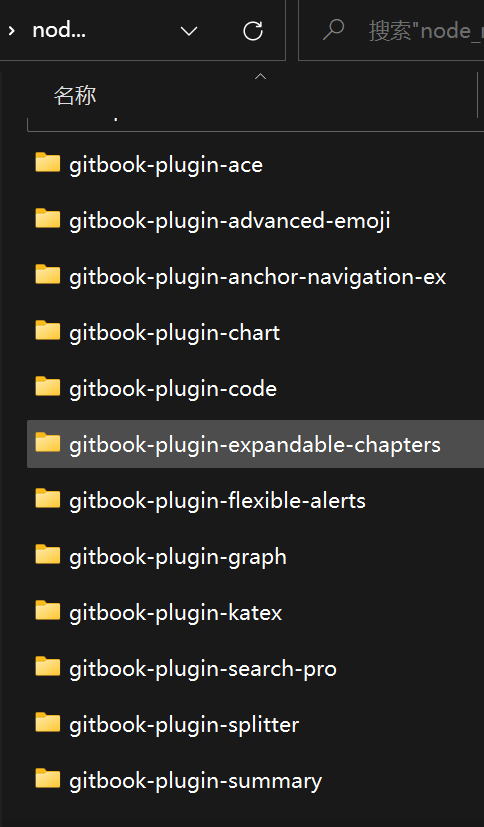

插件
记录一些实用的插件, 如果要指定插件的版本可以使用 plugin@0.3.1。
Gitbook默认带有7个插件（功能性5个，搜索有两个，主题一个）：
- livereload 热加载插件
- highlight 语法高亮插件
- search 搜索插件
- lunr 搜索插件后台服务
- sharing 分享插件
- fontsettings 字体设置插件
- theme-default 主题
下面的插件在 GitBook 的 3.2.3 版本中可以正常工作，因为一些插件可能不会随着 GitBook 版本的升级而升级，即下面的插件可能不适用高版本的 GitBook。 另外本文记录的插件在 windows 下都是可以正确工作的， Linux 系统没有测试。 这里只是列举了一部分插件，如果有其它的需求，可以到 插件官网 区搜索相关插件。
大部分插件都针对默认主题的，如果指定了其他主题插件，可能会导致部分插件失效或显示错乱。
由于 Gitbook 的原创团队重心偏向 gitbook.com 的运行，目前 插件官网 https://plugins.gitbook.com 已无法打开。
示例中给出的插件链接换成了 github 的地址
插件参考地址
插件安装提示
插件的说明文档中，一般都建议使用下面的方式安装插件：
gitbook install
但是这种方式下载比较慢，推荐使用 npm 方式安装插件。
[!TIP|style:flat|iconVisibility:hidden|labelVisibility:hidden] npm install gitbook-plugin-xxx
Honkit 全局安装插件
npm install gitbook-plugin-xxx --save-dev -g
使用全局安装插件就不用创建每一本 book 都安装一遍插件，多出一个 node_modules 文件夹。
D:\Java\nvm\v16.17.0\node_modules

必备插件
// json 文档对注释不友好，所以在此统一添加说明；当然也可以将文件夹（npm init
）初始化为 npm 项目使用 book.js 作为配置文件。
// 插件列表
"plugins": [
"-lunr",
"-search",
"search-pro",
"highlight",
"code",
"theme-comscore",
"-splitter",
"-summary",
"anchor-navigation-ex",
"expandable-chapters",
"versions-select",
"tbfed-pagefooter",
"flexible-alerts",
"advanced-emoji"
],
// honkit 安装 gitbook 插件 -g 表示全局
npm install gitbook-plugin-search-pro --save-dev -g
npm install gitbook-plugin-code --save-dev -g
npm install gitbook-plugin-theme-comscore --save-dev -g
npm install gitbook-plugin-splitter --save-dev -g
npm install gitbook-plugin-anchor-navigation-ex --save-dev -g
npm install gitbook-plugin-expandable-chapters --save-dev -g
npm install gitbook-plugin-versions-select --save-dev -g
npm install gitbook-plugin-summary --save-dev -g
npm install gitbook-plugin-ace --save-dev -g
npm install gitbook-plugin-chart --save-dev -g
npm install gitbook-plugin-graph --save-dev -g
npm install gitbook-plugin-katex --save-dev -g
{
"title": "Windows 高级攻防",
"language": "zh-hans",
"author": "zha0cai",
"links": {
"sidebar": {
"My github": "https://github.com/zha0cai"
}
},
"plugins": [
"-lunr",
"-search",
"search-pro",
"highlight",
"code",
"theme-comscore",
"-splitter",
"-summary",
"anchor-navigation-ex",
"expandable-chapters",
"versions-select",
"tbfed-pagefooter",
"flexible-alerts",
"advanced-emoji"
],
"pluginsConfig": {
"anchor-navigation-ex": {
"showLevel": false,
"showGoTop": true
},
"tbfed-pagefooter": {
"copyright":"Copyright & Copy zha0cai",
"modify_label": "该文件修订时间：",
"modify_format": "YYYY-MM-DD HH:mm:ss"
},
"flexible-alerts": {
"note": {
"label": "Hinweis"
},
"tip": {
"label": "Tipp"
},
"warning": {
"label": "Warnung"
},
"danger": {
"label": "Achtung"
}
},
"chart": {
"type": "c3"
},
"versions": {
"gitbookConfigURL": "book.json",
"options": [
{
"value": "https://zha0cai.github.io/gitbookPublic/gitbook-Windows 高级攻防/",
"text": "Windows 高级攻防",
"selected": true
},
{
"value": "https://zha0cai.github.io/gitbookPublic/home/",
"text": "Home Page",
"selected": true
}
]
}
}
}
插件使用
"plugins": [
"-lunr",
"-search",
"search-pro", -- 这里的名字要对应 gitboo-plugin-xxxx，后面这 xxx 部分，不然在 node_modules 里面会找不到插件
],